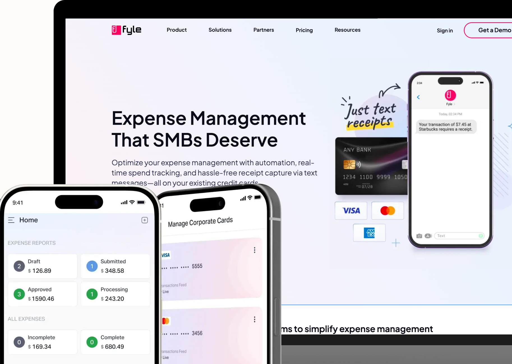

Fyle is an expense management platform that streamlines the entire process from
submitting receipts to reimbursement. It helps businesses efficiently handle receipt collection,
approval workflows, compliance verification, and accounting integration.
I joined Fyle as a senior designer during its early stages when the company was focused on
the Indian travel market. Fyle was forced to pivot to the US market during COVID, and unexpectedly
found iteself flooded with demo requests. There I was, still finding my footing in the product's new
positioning, yet suddenly thrust into navigating a series of rapid shifts. üôÇ
I stepped up to lead the team and the design strategy. Over next four years, my work
directly contributed to Fyle's growth from $0 to $8M+ in revenue.
A brief
- Primary Role: Senior Product Designer → Associate Director
- Time Frame: 2019 - 2025
- Company Size: ~30 → 150+
- Business Model: B2B2C, SaaS
Walking through the flames üî•
When I stepped up to lead the team, the product and design decisions were predominantly driven
by engineers. They even led design critiques (yes, really! :P) and offered numerous subjective
comments. Designers had lost their voice. There was no formal
design team structure, and designers couldn't collaborate with peers to gain different perspectives.
I needed to transform this culture, build a strong team, and drive strategic vision.
Hence, I prepared a foundational roadmap focused on three key pillars:
- ✨ Building the team: How I motivated my team
- üöÄ Maximizing design influence: How I removed obstacles and amplified my team's
impact
- üéØ Envisioning product excellence: How I developed and executed a compelling
product vision
✨ Building the team
It was a fascinating personal pivot when I woke up one day to find my relationships with colleagues had suddenly transformed. Though initially overwhelming,
I quickly
adapted and focused on building what was necessary.
Drawing in exceptional talent
To be honest, top designers rarely dream of working for an unfamiliar B2B SaaS company where
they'll spend days designing data tables. The challenge was even greater when our product
appeared dated.
But people do dream of joining teams where they feel valued, inspired, and can create meaningful
impact. I emphasized these aspects during recruitment conversations.
We built a powerhouse team of seven designers—each bringing unique skills but sharing a
strong product sensibility.
Establishing meaningful team rituals
As the product grew, I established several rituals to enhance collaboration in our remote setting and
strengthen team bonds.
- ü§ù Weekly Catchups: These synchronization meetings gave the team opportunities to share ongoing initiatives and receive feedback.
- üñåÔ∏è Design Review Process: All individual contributions went through a design
owner's review cycle before meeting the product team.
- üé≠ Friday Showcases: Fridays featured a mix of activities‚Äîcasual hangouts, game
sessions, or creative product explorations.
- üéì Thoughtful Onboarding: I designed a buddy system for new members to ensure
they never felt lost.
These rituals helped us maintain strong camaraderie and collaboration even as our team expanded.
For 2.5 years, the design team maintained a zero attrition
rate.
Nurturing early-career designers
Passionate about developing emerging talent, I initiated conversations with management about hiring interns and freshers.
Over the years, we welcomed three interns, with two transitioning to full-time
positions. Those early birds who joined as freshers are now thriving as mid level senior and lead designers.
üöÄ Maximizing design influence
As our business
gained momentum and approached product-market fit, I concentrated on building infrastructure for
sustainable growth of the team.
Bringing consistency and speed through Design System
In a rapid experimentation environment, it is hard to match the speed without having proper systems in
place.
During my initial audit of the entire product, I found several inconsistent patterns ranging from colors, numerous border
radius types to inconsistent typography, countless button styles, and more. But identifying these
issues wasn't enough—it was a hard sell.
When a product is pivoting, the business cares primarily about critical success factors. Pitching a
design system for roadmap consideration would likely get dropped because of other pressing issues.
I needed to explain the business impact.
To strengthen my case, I deeped dived and found the following issues:
- üì∞ The marketing team used different graphics for feature explanations to sell features. Customers
frequently questioned these visuals, leading to trust issues.
- üí® The sales team struggled to sell a dated-looking product in a competitive market.
- ü§¶Ô∏è It was harder to attract top talent, as they were reluctant to work on outdated systems.
- üõ†Ô∏è Development efforts were wasted on redundant frontend components.
These findings created unanimous agreement that change was essential.
The new system empowered the design team to tackle complex problems without getting bogged down in
consistency issues.
üéØ Crafting a unified vision
I went through all customer call recordings from the product
team to understand the US market and customer needs, then mapped various user journeys. We chose to
address high-value features within core workflows while simultaneously implementing our new design
language. Both tracks were crucial, and a waterfall approach would have failed.
I made the deliberate decision to align product's visual direction with product's marketing website, creating a
unified experience for customers.
Reimagining existing functionality
Our product offered valuable features, but users struggled to discover this
value. I wanted to demonstrate that by focusing on user needs, we could unlock new value from our
existing technology.
Starting with spender's mobile app, we repositioned InstaFyle feature access for capturing expense receipt and watched
adoption soar from 40% to 82%. This exemplified how small changes can deliver massive impact.
Additionally, our refreshed mobile design language gave the marketing team better promotion
materials.
Refining navigation, flows, IA and fixing 100+ usability issues
Since engineers had driven much of the design, many flows, navigation patterns, and information
architecture weren't fully optimized.
We needed to consolidate several workflows and restructure our information architecture to align with
users' mental models, making our product more intuitive. We eliminated modules built specifically
for the Indian market that no longer served our US customers.
By this point, we had refreshed nearly 70% of the product with our new design language while
enhancing existing functionality, addressing usability issues, improving information architecture,
and optimizing flows—all while meeting our key performance indicators.
Our strategy remained focused
on our core product principle: don't make users spend a single unnecessary second creating an
expense.
These initiatives helped us increasing our NPS from 35 to 60+ within 6 months.
Rethinking core experiences
Platforms like integrations required substantial overhauls and deeper research. Product and
design teams collaborated to solve these challenges and deliver transformative user experiences.
Driving innovation
A groundbreaking partnership with Visa and Mastercard revolutionized how users submit expenses to
Fyle, challenging industry conventions around company-issued cards. This innovation shook the
expense management world, earning Fyle recognition in Forbes.
The design team partnered with Visa to understand legal requirements and create compliant solutions.
Remarkably, Visa approved the design on the first submission.
With AI's growing influence, the team began exploring Copilot capabilities alongside product
development beforeI I left Fyle.
Building momentum through transparency
In every company town hall & dedicated slack channel, we showcased our latest visual refreshes alongside usability improvements
and core issue fixes, steadily building excitement throughout the organization.
This approach made vision-creation truly collaborative. Anyone in the company could contribute
insights, challenge assumptions, or connect us with customers for feedback.
üìà Measuring impact
By building a strong design team and crafting a clear product vision and strategy, I helped drive
Fyle's business growth.
- 0 -> $8M+ Businesses growth
- 0% Design team attrition over 2.5 years
- 2 → 7 Design team growth
In its embedded offerings, more than 1,000+ businesses are already onboarded impacting over 800,000+ users with just 1 client before I left.
Looking back
I'm humbled by the journey I've shared with the design and
leadership teams. The path hasn't always been easy, and while we continue building toward our
vision, I remain deeply grateful for the incredible people who made it all possible.